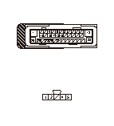
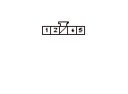

VSA DTC 86-19
DTC 86-19:
F-CAN通信異常 舵角センサ
故障診断を始める前に、フリーズ データおよびオンボード スナップショット情報をHDSに保存し、
故障診断の進め方を確認する
DTCの確認
1-1
イグニッション スイッチをON（
II
）にする
1-2
HDSでDTCをクリアする
1-3
イグニッション スイッチをOFFにする
1-4
エンジンを始動し、5秒以上待つ
1-5
DTCメニュー内のDTCをHDSで確認する
◆ DTC 86-19は表示されているか
YES
-
•
DTC 86-11が同時に表示される場合は、
DTC 86-11
の故障診断を行う
•
DTC 86-11が同時に表示されない場合はステップ
2
へ進む
NO
-
舵角センサとVSAモジュレータ コントロール ユニット間コードの一時的な接触不良
CAN L、CAN Hラインの断線点検
2-1
イグニッション スイッチをOFFにする
2-2
舵角センサ5Pカプラの接続を外す
2-3
VSAモジュレータ コントロール ユニット38Pカプラの接続を外す
2-4
VSAモジュレータ コントロール ユニット38Pカプラ端子と舵角センサ5Pカプラ端子の導通を確認する（表参照）
端子記号
VSAモジュレータ
コントロール
ユニット38P
カプラ端子
舵角センサ
5Pカプラ端子
CAN L
No.14
No.2
CAN H
No.26
No.4
◆ 導通があるか
YES
-
ステップ
3
へ進む
NO
-
舵角センサとVSAモジュレータ コントロール ユニット間コードの断線

舵角センサ電源ラインの点検
3-1
イグニッション スイッチをON（
II
）にする
3-2
舵角センサ5PカプラNo.5端子とボディ アース間の電圧を測定する
◆ バッテリ電圧か
YES
-
ステップ
4
へ進む
NO
-
ヒューズ ボックスと舵角センサ間コードの断線

舵角センサGNDラインの点検
4-1
イグニッション スイッチをOFFにする
4-2
舵角センサ5PカプラNo.1端子とボディ アース間の導通を確認する
◆ 導通があるか
YES
-
ステップ
5
へ進む
NO
-
舵角センサとボディ アース間コードの断線またはアース不良（G502）
舵角センサ交換後の点検
5-1
舵角センサを良品に交換する
5-2
全てのカプラを再接続する
5-3
イグニッション スイッチをON（
II
）にする
5-4
HDSでDTCをクリアする
5-5
イグニッション スイッチをOFFにする
5-6
エンジンを始動し、5秒以上待つ
5-7
DTCメニュー内のDTCをHDSで確認する
◆ DTC 86-19は表示されているか
YES
-
ステップ
6
へ進む
NO
-
元の舵角センサ交換
VSAモジュレータ コントロール ユニットのプログラムの点検
6-1
VSAモジュレータ コントロール ユニットのプログラムが最新か確認する
◆ プログラムは最新か
YES
-
VSAモジュレータ コントロール ユニット38Pカプラの接続不良を点検し、異常がなければ
VSAモジュレータ コントロール ユニット交換
NO
-
ステップ
7
へ進む
VSAモジュレータ コントロール ユニットのアップデート
7-1
VSAモジュレータ コントロール ユニットのプログラムを最新のプログラムにアップデートする
7-2
イグニッション スイッチをOFFにする
7-3
エンジンを始動し、5秒以上待つ
7-4
DTCメニュー内のDTCをHDSで確認する
◆ DTC 86-19は表示されているか
YES
-
VSAモジュレータ コントロール ユニット38Pカプラの接続不良を点検し、異常がなければ
VSAモジュレータ コントロール ユニット交換
NO
-
故障診断完了
 故障診断を始める前に、フリーズ データおよびオンボード スナップショット情報をHDSに保存し、
故障診断を始める前に、フリーズ データおよびオンボード スナップショット情報をHDSに保存し、